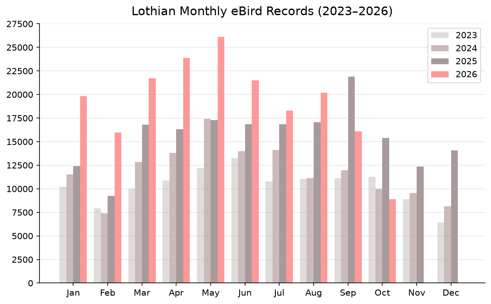

Edinburgh, East Lothian, Midlothian, West Lothian
Notable eBird sightings from the past 5 days. Includes unverified records.
In total 2033 observations of 128 species were recorded across 99 locations, based on 157 checklists submitted by 58 birders.
Sort by Species|Date
